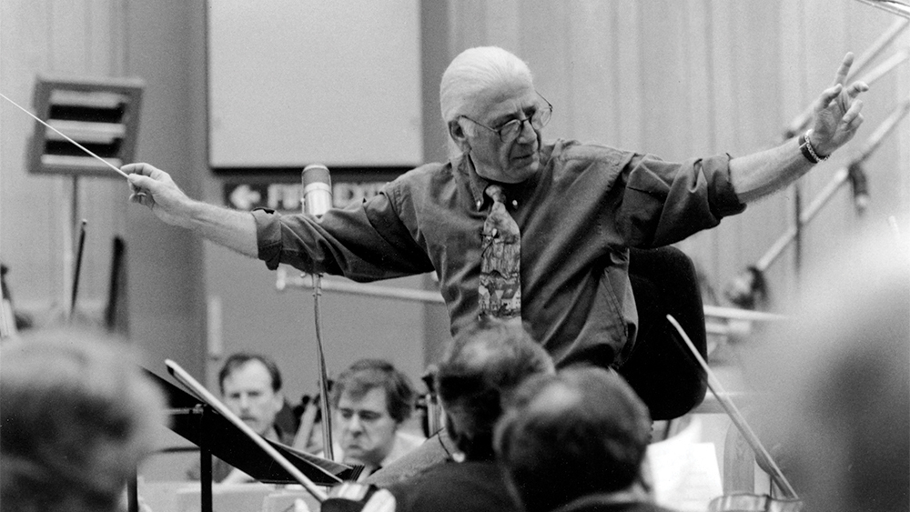

Como muchas otras sagas, la música de Star Trek ha jugado un papel fundamental en el concepto, aportando el acompañamiento necesario para los momentos más emotivos, bélicos y solemnes de esta franquicia. A lo largo de las series y películas han desfilado los nombres de reconocidos compositores como Alexander Courage, Jerry Goldsmith, James Horner, Dennis McCarthy, Jay Chattaway y otros.
La música de Star Trek son todas las composiciones orquestales, incidentales y de acompañamiento para las diferentes series de televisión del universo Star Trek de Gene Roddenberry, propiedad del estudio Paramount, así como para su serie de películas, serie animada e incluso videojuegos.
La serie televisiva original Star Trek de 1966 tuvo un emblemático tema musical, cuya introducción fue retomada después para la segunda serie de 1987, mientras el tema principal compuesto por Jerry Goldsmith para la primera película de 1979 lograría convertirse en reconocible y asociable de toda la saga. Posteriormente, la serie de películas y las televisivas han contado con la participación de numerosos músicos quienes han aportado nuevos temas, aunque el de Goldsmith ha sido hasta ahora el punto de referencia.
